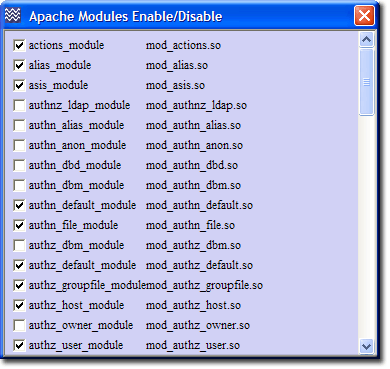

Apache - Introduction
Apache HTTP Server is an open-source web server platform. It is one of the main components of The Uniform Server. Apache has been pre-configured to run as a local web server. There are several configuration options allowing the server to be accessed from an Intranet or the Internet. The Uniform Server provides an easy-to-use control interface, UniController, allowing you to run servers as either a standard program or a service. UniController contains a sub-menu specifically targeting Apache. From this sub-menu you can put your server on-line, change ports or create a server certificate. This page covers all the sub-menu options.
Edit Basic Configuration
This form allows you to change commonly configured Apache options.
UniController: Server Configuration > Apache > Edit Basic Configuration
A default installation of The Uniform Server configures the main server for localhost. This is intended for testing. Before putting your servers on-line, if you have registered a domain name, change "Server name" and "Server Admin Email" to match that name.
- 1) Server Name sets the hostname of your server; for example, fred.com
- 2) Admin E-mail Use a real e-mail address for users to contact; for example, admin@fred.com
- 3) Directory Index Files This list is searched when a client requests an index page without explicitly specifying it. If a match is found that index page is served.
- 4) Apache processes files with the extensions listed; any SSI Server Side Includes directives found in these files are executed.
- 5) Server Signature This allows Apache to add a footer line for server-generated documents (Value is On or Off).
- 6) Listen Port This tells Apache to listen to a specific port and to accept incoming requests only on that specified port.
- 7) Update Configuration button applies the changes.
Note 1: For the new settings to become effective you must restart the server.
Note 2: For more information, see Apache Basic Configuration
|

|
Edit configuration files
Edit httpd.conf
UniController: Server Configuration > Apache > Edit httpd.conf
Opens the configuration file in notepad, allowing you to directly edit the file.
File: UniServer\usr\local\apache2\conf\httpd.conf
Edit ssl.conf
UniController: Server Configuration > Apache > ssl.conf
Opens the configuration file in notepad, allowing you to directly edit the file.
File: UniServer\usr\local\apache2\conf\extra\ssl.conf
View log files
The following menu options provide convenient short cuts allowing you to view server log files. If you are experiencing problems with the server, these should be your first port of call; they may shed light on a particular issue.
Below are the paths to each log file along with a small extract:
View Error log file error.log
Location:UniServer\usr\local\apache2\logs\error.log
|
[Fri Jul 08 21:25:46 2011] [notice] Apache/2.2.19 (Win32) mod_ssl/2.2.19....
[Fri Jul 08 21:25:46 2011] [notice] Server built: May 20 2011 21:39:40
[Fri Jul 08 21:25:46 2011] [notice] Parent: Created child process 1028
[Fri Jul 08 21:25:50 2011] [notice] Child 1028: Child process is running
[Fri Jul 08 21:25:50 2011] [notice] Child 1028: Acquired the start mutex.
[Fri Jul 08 21:25:50 2011] [notice] Child 1028: Starting 250 worker threads.
[Fri Jul 08 21:25:50 2011] [notice] Child 1028: Starting thread to listen on port 443.
[Fri Jul 08 21:25:50 2011] [notice] Child 1028: Starting thread to listen on port 80.
|
View Access log file access.log
Location:UniServer\usr\local\apache2\logs\access.log
|
127.0.0.1 - - [08/Jul/2011:21:25:53 +0100] "GET /us_splash/index.php HTTP/1.1" 200 1290
"-" "Mozilla/5.0 (Windows; U; Windows NT 5.1; en-GB; rv:1.9.2.18) Gecko/20110614
Firefox/3.6.18 ( .NET CLR 3.5.30729)"
|
View SSL Error log file error.log
Location:UniServer\usr\local\apache2\logs\error_ssl.log
|
[Fri Jul 08 21:29:44 2011] [warn] RSA server certificate CommonName (CN)
`localhost123' does NOT match server name!?
[Fri Jul 08 21:29:45 2011] [warn] RSA server certificate CommonName (CN)
`localhost123' does NOT match server name!?
|
View SSL Access log file access.log
Location:UniServer\usr\local\apache2\logs\access_ssl.log
|
127.0.0.1 - - [08/Jul/2011:21:28:47 +0100] "GET /index.php HTTP/1.1" 200 762
127.0.0.1 - - [08/Jul/2011:21:28:47 +0100] "GET /us_splash/css/style.css HTTP/1.1" 304 -
|
Generate Certificate
This form allows you to quickly generate a self-signed server certificate or a certificate-signing request (CSR).
|
UniController: Server Configuration > Apache > Generate Certificate
- This opens the Server Certificate and Key generator menu shown at right
- D) Click Run Generate After a short time, a confirmation pop-up is displayed.
- For the new configuration to become effective, you must restart Apache server.
The above generates a self-signed certificate.
Note 1: For detailed information about enabling SSL, see Apache - SSL
Note 2: For detailed information about self-signed certificates, see Server Certificate Self-Signed
Note 3: For detailed information about Certificate Signing Requests, see Free Server Certificate
|

|
Apache Vhosts
This menu allows you to quickly create virtual host blocks.
UniController: Server Configuration > Apache > Apache Vhosts
|
Creating a Vhost requires only two form entries, a server root folder and a host name. After entering these, click the confirm button. All other directives are optional, and are automatically filled in with values based on the above two form entries. Clicking the Create Vhost button creates the root folder if it does not exist. A Vhost is created in the Vhost configuration file and an entry is written to your PC’s host file. Here is a summary of the steps:
- A3) Either replace *** with the folder name you wish to use as your server root folder or click Select Folder button and navigate to an existing folder and select it.
- A4) Enter your server name (host name). This is the domain name you registered with a registrar, for example fred.com. It is the name you enter in a browser to access your web site (excluding the http:// part).
- A13) Click the Confirm button. This enables the greyed out buttons and fills in form fields with selected values for other Apache directives. Change or delete these as appropriate.
- A10) Click Create Vhost button to create your virtual host.
Note 1: After creating a Vhost you must restart your Apache server otherwise Apache will not recognise the new configuration.
Note 2: For detailed information see Apache Vhosts
|

|
Apache Data
These menu options provide convenient short cuts that allow you to
view the server status and other important information.
They are shown along with a small extract of each file.
Each menu option runs a small script that redirects your browser to the
appropriate page. You also can type this address directly into your browser.
Apache server-status
Menu item redirects to: http://localhost/server-status
|
Apache Server Status for localhost
Server Version: Apache/2.2.19 (Win32) mod_ssl/2.2.19 OpenSSL/1.0.0d PHP/5.3.6 DAV/2
Server Built: May 20 2011 21:39:40
Current Time: Friday, 08-Jul-2011 22:43:16 GMT Daylight Time
Restart Time: Friday, 08-Jul-2011 22:29:47 GMT Daylight Time
Parent Server Generation: 0
Server uptime: 13 minutes 28 seconds
Total accesses: 13 - Total Traffic: 2 kB
.0161 requests/sec - 2 B/second - 157 B/request
1 requests currently being processed, 249 idle workers
|
Apache server-info
Menu item redirects to: http://localhost/server-info
|
Server Settings
Server Version: Apache/2.2.19 (Win32) mod_ssl/2.2.19 OpenSSL/1.0.0d PHP/5.3.6 DAV/2
Server Built: May 20 2011 21:39:40
Server loaded APR Version: 1.4.5
Compiled with APR Version: 1.4.5
Server loaded APU Version: 1.3.12
Compiled with APU Version: 1.3.12
Module Magic Number: 20051115:28
Hostname/port: localhost:80
Timeouts: connection: 300 keep-alive: 5
|
Apache Modules Enable Disable
|
This sub-menu allows you to enable or disable Apache Modules.
NOTE: improper use can totally disable your server! Be sure you know what a module does before you enable or disable it.
Server Configuration > Apache > Apache Modules Enable/Disable
- If checkbox is unchecked: Module disabled
- If checkbox is checked: Module enabled
Note: After changing state you must restart the Apache server for the new configuration to be recognised. This modifies the file
UniServer\usr\local\apache2\conf\httpd.conf
|

|
|